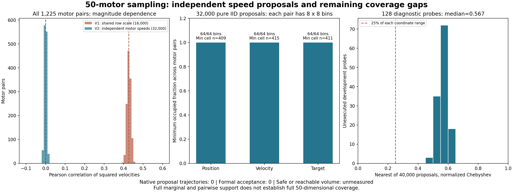

随机范围与实验有效性
这些输入尚未进行原生物理运行，正式留出验收为0，九项原要求仍须全部联合通过。没有据此采用System 0策略。
实验资产仍为2 FR3/F2 + 2 UR5/DFX；标准2 FR3 + 2 JAKA ZU7 + 4 RH56F2尚未验收。位置、速度联动误差必须同时≤0.0001；原接触力、真实夹持、抬升、搬运、释放及退回门槛保持。
这批随机输入包含什么
| 分层 | 数量 | 采样方式 |
|---|---|---|
| 纯独立采样 | 32,000 | 50个独立电机的位置、速度和目标分别独立采样，覆盖各原始可用区间。 |
| 边界与反向目标 | 4,000 | 每电机独立选择上下边界、接近正负限速，目标取反向边界。 |
| 每电机混合速度 | 4,000 | 每电机独立选择0、1%、10%或100%的速度倍率；保留为单独分层。 |
50个自由输入包含26个臂关节和24个手部电机；其余24个被动关节按照原始URDF映射为完整74关节输入。独立检查涵盖全部40,000条输入的原始限位、限速、目标绑定及24条联动关系。
修复隐藏的速度相关性
旧批次每条输入中的50个电机共享速度倍率。速度本身的低相关性掩盖了速度幅值依赖：各电机速度平方的平均相关系数为0.427076；新纯独立批次为-0.000298。低经验相关性本身也不能证明独立性，采样定义和分层记录一并保留。

下载SVG图 · 点击上图查看完整大小。

边际与成对覆盖通过，50维物理覆盖没有证明
| 变量 | 电机对 | 每对8×8格占用 | 最少格样本数 | 最大绝对相关系数 |
|---|---|---|---|---|
| 位置 | 1,225 | 64/64 | 409 | 0.02194 |
| 速度 | 1,225 | 64/64 | 415 | 0.01766 |
| 目标位置 | 1,225 | 64/64 | 411 | 0.01768 |
对128个未执行的独立开发诊断点，最近提案在50维归一化最大坐标距离上的中位数为0.566985；没有一个点能在每个电机均相差25%范围内找到提案。边际和成对覆盖不能替代50维覆盖；安全或可达体积尚未测量。
这批输入不包含物体布局、观测噪声、陈旧输入与故障阶段的物理评测。后续必须记录全部几何拒绝、原生轨迹、失败及分层统计；在机制冻结和完整任务合格后，才能生成新的正式留出库。
保留无效实验，避免把静止误算为安全效果
原生V51细化到64微步后，稳定等待门仍沿用旧物理步长，30,783个相邻采样被判不连续。机械臂跟踪与速度也未同时达到原门槛。该次在8.016346秒预抓取超时，没有手与物体接触，没有进入抓取、抬升或搬运；其很小的手部联动误差仅属未受载观测，不能作为负载模型通过。
时钟错误的独立诊断 · 原物理参数保留与资格拒绝。时钟修复的四项回归已通过，但不保证物理任务成功。
原九项联合验收
| 原要求 | 状态 |
|---|---|
| 回退保持在原始非零速度和延迟下持续安全 | 联合未验收 |
| 保留操作意图并有实际四臂运动 | 联合未验收 |
| 强随机、大范围操作空间与定向危害覆盖 | 联合未验收 |
| 科学规范的冻结协议、独立多种子、留出与不确定性报告 | 联合未验收 |
| 物体位置、姿态、大小、速度、可达性进入明确规划与安全输入 | 联合未验收 |
| 真实物理夹持、抬升、搬运、放置和释放 | 联合未验收 |
| 真实四臂共同任务且有安全与不安全的同输入对照 | 联合未验收 |
| 完整原生观测和独立危害判据，无漏测或单看画面 | 联合未验收 |
| 网页可审阅的安全对照、完整视角和证据归档 | 联合未验收 |
可下载的输入与审计
40,000×50独立输入无损归档（41.9 MB） · 完整74关节重建映射 · 原始关系与限位审计 · 分布与覆盖审计 · 九项原验收证据表 · 全部文件哈希
生成器外层退出回执因工具输出截断仍为UNKNOWN，保留该缺口；已有归档经独立审计通过，没有重跑或伪造生成器回执。所有物理覆盖、真实任务和System 0正式安全结论仍未验收。